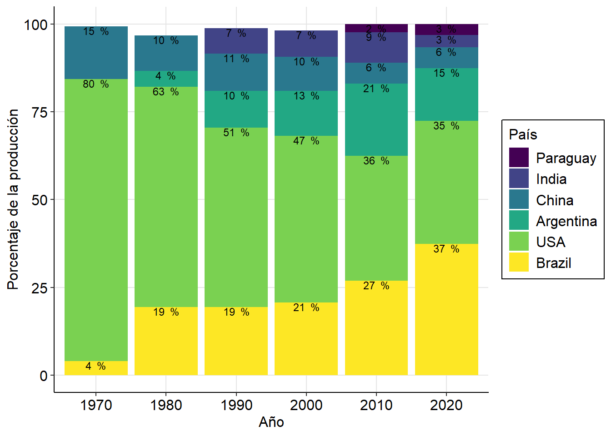
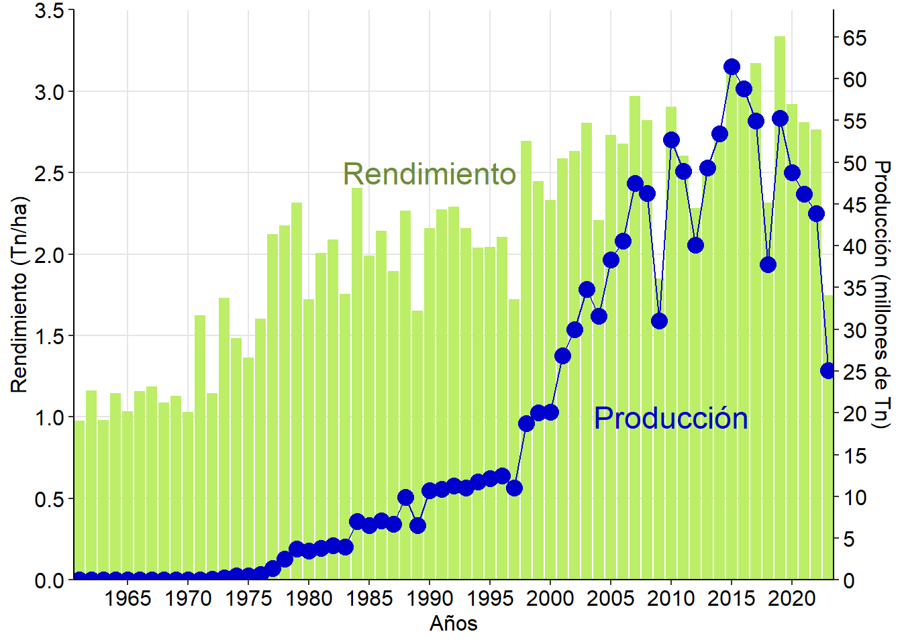
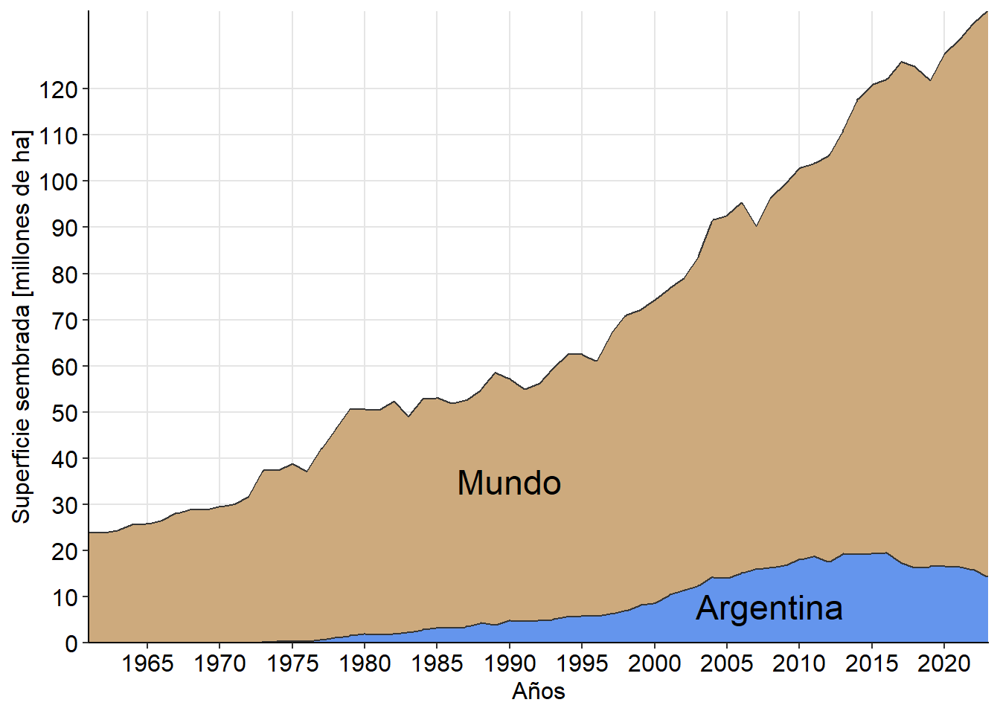

Para trabajar en de aquí en adelante utilizaremos otra base de datos. La misma la armé en base a los datos de superficie cultivada, producción y rendimiento de soja en los principales productores mundiales y el total del mundo (extraída de informes de la FAO1) desde 1961 hasta 2023.
Cargaremos la base de datos y hacemos un mapeo rápido de la variables, a las cuales le efectuaremos una conversión para un manejo más amigable de los números:
soja_paises <- soja_paises %>%mutate(Sup = Sup /1000000, # millones de haProduction = Production /1000000, # millones de TnYield = Yield /1000# Tn/ha )
1.1 Gráfico de barras apiladas y apilado porcentual
Veremos ahora cómo realizar un gráfico de barras apilado y un apilado porcentual, agregando etiquetas con los valores de cada fragmento. Vamos a suponer que queremos graficar la producción acumulada de soja en los diferentes países que integran nuestra base de datos, de forma absoluta y porcentual. Para evaluar la evolución en el tiempo, seleccionaremos algunos años para mostrar:
# Seleccionamos años redondos para mostrar la evoluciónaños_seleccion <-c(1970, 1980, 1990, 2000, 2010, 2020)
Una vez teniendo nuestro objeto de selección de años, procederemos a organizar nuestra base de datos. Hacer un gráfico de barras apiladas es algo sencillo, de hecho es como se generan por defecto los gráficos con geom_col si no ajustamos el position:
soja_paises %>%filter(Year %in% años_seleccion, Area !="World") %>%ggplot(aes(Year, Production, fill = Area))+geom_col()
El desafío consiste en lograr graficos en los cuales:
Los elementos estén en un orden determinado que queramos.
Se indique en cada rectángulo el valor parcial.
Se visualice el acumulado porcentual.
Para ello vamos a hacer una serie de transformaciones de nuestra base de datos utilizando pipes (%>%). Veamos cómo hacerlo y generar el objeto soja_apilado:
filter: filtramos por los años que están en el objeto, y eliminamos World.
mutate + factor : permite reorganizar los niveles del factor como queramos. Luego se graficarán en ese orden.
group_by : criterio de agrupamiento para los cálculos.
arrange : los datos se ordenarán por año y por la producción.
2° mutate : calcula el porcentaje de producción del total y luego los acumulados parciales donde irán las etiquetas en cada gráfico (por eso los llamo label). El cálculo lo hace siguiendo el criterio de agrupamiento de group_by .
Repasemos como quedó la base de datos:
soja_apilado
# A tibble: 36 × 8
Area Year Sup Production Yield percent_Prod label_y label_y_perc
<fct> <dbl> <dbl> <dbl> <dbl> <dbl> <dbl> <dbl>
1 Brazil 1970 1.5 1.51 1.00 3.95 1.51 3.95
2 USA 1970 13 30.7 2.36 80.4 32.2 84.4
3 Argentina 1970 0.0260 0.0268 1.03 0.0702 32.2 84.4
4 China 1970 8.6 5.7 0.663 14.9 37.9 99.4
5 India 1970 0.016 0.009 0.563 0.0236 37.9 99.4
6 Paraguay 1970 0.129 0.238 1.19 0.623 38.2 100
7 Brazil 1980 8.8 15.1 1.72 19.4 15.1 19.4
8 USA 1980 27.9 48.8 1.75 62.7 63.9 82.1
9 Argentina 1980 2.03 3.5 1.72 4.50 67.4 86.6
10 China 1980 7.9 7.9 1 10.2 75.3 96.8
# ℹ 26 more rows
Ya estamos listos para realizar nuestros gráficos:
# Gráfico apilado absolutoG4 <- soja_apilado %>%ggplot(aes(x =factor(Year), # hay que aclarar que es un factory = Production, fill =fct_rev(Area))) +# debemos invertir el orden para que quede biengeom_col(col="black") +geom_text(aes(label =round(Production, 1), # redondeamos el valor para la etiquetay = label_y), # ajustamos la posición de la etiquetavjust =1, # variación verticalsize =3) +labs(x ="Año",y ="Producción (millones de Tn)", fill ="País") + THEME +scale_fill_viridis_d(); G4
# Gráfico apilado porcentualG5 <- soja_apilado %>%filter(percent_Prod>2) %>%# filtramos los más pequeñosggplot(aes(x =factor(Year), y = percent_Prod, fill =fct_rev(Area))) +geom_col() +geom_text(aes(label =paste(round(percent_Prod, 0)," %"), y = label_y_perc),vjust =1, size =3) +labs(x ="Año", y ="Porcentaje de la producción", fill ="País") + THEME +scale_fill_viridis_d(); G5

1.2 Actividad 5.a
Realice un gráfico de barras apiladas absoluto y porcentual donde se visualice la superficie cultivada en cada uno de los países de la base de datos soja_paises en los años 1965, 1985, 2005 y 2023.
1.3 Combinando gráficos de distinto tipo
También puede resultarnos de utilidad combinar gráficos de dos tipos diferentes en mismo gráfico utilizando diferentes bases de datos. Esta opción es muy útil y sencilla de utilizar, sin embargo hay un par de condiciones a cumplir:
el eje x debe ser el mismo.
el eje y también debe ser el mismo, o al menos ser “compatible” en escala, o involucrar un eje secundario. Veremos ambas variantes.
Una vez cumplidas estas condiciones, es solo cuestión de usar nuestra creatividad para crear el mejor gráfico. Supongamos como ejemplo que queremos comparar el rendimiento de la soja en Argentina contra el promedio mundial a lo largo de los años. Podemos hacer un gráfico de columnas clasificando por región:
Como vemos, de esta manera nos quedan demasiadas columnas y es muy difícil tener una idea clara del patrón. En cambio vamos a colocar el rendimiento global como puntos unidos por una línea. Para ello generaremos las bases de datos argentina y mundo. Luego debemos especificar la base de datos que utilizará cada geom, eso se puede hacer introduciendo un aestetic directamente en los parámetros del geom. Cuando creamos nuestro gráfico (ggplot(aes(...))) los geom que introduzcamos luego “heredan” tanto la base de datos como la estructura x-y determinada por aestetic que acompaña a ggplot. Si nuestro nuevo geom requiere un dataset diferente, debemos expresamente introducirlo.
Además vemos que las comas del eje Y aparecen como puntos, lo modificaremos al formato del español:
soja_mundo <- soja_paises %>%filter(Area =="World")soja_argentina <- soja_paises %>%filter(Area =="Argentina")ggplot() +# dejamos vacío el ggplot generalgeom_col(data = soja_argentina, aes(Year, Yield), #especificamos acáfill ="cornflowerblue") +geom_line(data = soja_mundo, aes(Year, Yield), # y en cada geomcol ="red") +geom_point(data = soja_mundo, aes(Year, Yield), col ="red", size =2) +scale_y_continuous(expand =c(0, 0), breaks =seq(0, 5, by = .5),labels =function(x) format(x, decimal.mark =",",scientific =FALSE)) +scale_x_continuous(expand =c(0, 0), breaks =seq(1960, 2023, by =5)) +labs(x ="Años",y ="Rendimiento [Tn/ha]") +annotate("text", x =1990, y =2.5, label ="Argentina", col ="cornflowerblue", size =6) +# agregamos etiquetasannotate("text", x =1965, y =1.6, label ="Mundo", col ="red", size =6) + THEME
Ahora nos resulta mucho más fácil diferenciar en qué años (o períodos) el rendimiento fue mayor en Argentina que el promedio global.
1.4 Eje secundario
Si bien el uso de gráficos con ejes secundarios no fue planteado por el creador de ggplot2 por no considerarlo útil (idea que comparto), se puede incorporar mediante el parámetro sec.axis dentro de scale_y_continuos . Es importante destacar que este eje secundario se debe plantear como una transformación del eje primario.
Supongamos que queremos graficar, siguiendo con nuestra base de datos, el rendimiento y la producción de soja en Argentina a lo largo del tiempo, en el mismo gráfico. Tomaremos como eje primario el de rendimiento, y secundario el de producción. Como un eje tiene que se una proporción del otro, creamos una nueva variable que nos indique la relación entre ellos:
Y luego utilizaremos el valor máximo de estar relación para graficar y que ambas variables se “observen” en una escala similar. Luego deberemos realizar una conversión de la escala a poner en el eje secundario siguiendo un patrón similar. Como vamos a usar la relación máxima entre rendimiento y producción, el valor graficado será aproximado ya que cada año dicha relación será diferente. Sin embargo, veremos que la aproximación es bastante buena y sirve de forma representativa.
ggplot(soja_argentina, aes(x=Year))+# especificamos el eje xgeom_col(aes(y=Yield), # luego en cada geom el eje yfill="darkolivegreen2") +scale_y_continuous(expand =c(0,0), limits=c(0,3.5),breaks =seq(0,5, by = .5), sec.axis =sec_axis(~.*max(soja_argentina$Relacion), #la relación de los ejes name="Producción (millones de Tn)", # títulobreaks=seq(0,65, by=5)))+scale_x_continuous(expand =c(0,0),breaks =seq(1960,2023, by=5))+labs(x="Años",y="Rendimiento (Tn/ha)")+geom_line(aes(y=Production/max(Relacion)), col="blue3")+geom_point(aes(y=Production/max(Relacion)), col="blue3", size =4)+annotate("text", x=1990, y=2.5, label ="Rendimiento", col="darkolivegreen4", size=6)+annotate("text", x=2010, y=1, label ="Producción", col="blue3", size=6) + THEME

1.5 Pivoteando (pivoting)
La siguiente funcionalidad que veremos en este curso es el uso de pivot_longer y pivot_wider. Estas dos funciones tienen usos opuestos y permiten transformar completamente la estructura de la base de datos, a partir de intercambiar columnas por filas (o viceversa).
1.5.1 pivot_longer
Nos permite agrupar diferentes variables (que tengamos en varias columnas) en una que contenga el nombre de la categoría (que antes era el nombre de una columna) y otra que contenga el valor numérico que corresponde a cada una. Nada mejor para ilustrarlo que un ejemplo. Recordemos nuestra base de datos soja_paises que tenía esta estructura inicial:
head(soja_paises)
# A tibble: 6 × 5
Area Year Sup Production Yield
<chr> <dbl> <dbl> <dbl> <dbl>
1 World 1961 23.8 26.9 1.13
2 World 1962 23.8 27.1 1.14
3 World 1963 24.4 28.2 1.16
4 World 1964 25.7 29.1 1.13
5 World 1965 25.8 31.7 1.23
6 World 1966 26.5 36.4 1.37
Supongamos ahora que queremos crear una columna que contenga en sus filas el tipo de parámetro que estamos midiendo (superficie, producción o rendimiento) y otra que contenga el valor del parámetro correspondiente. La estructura básica de pivot_longer es la siguiente:
pivot_longer(c(`variable_1`, `variable_2`, ... , `variable_n`), # variables a combinarnames_to ="Variables", # el titulo de la nueva columna con las variablesvalues_to ="Valor") # el título de la nueva columna con el valor numérico
Notar que el nombre de las variables se debe introducir entre tildes invertidas (`). En nuestro caso de ejemplo será:
# A tibble: 1,323 × 4
Area Year Variables Valor
<chr> <dbl> <chr> <dbl>
1 World 1961 Sup 23.8
2 World 1961 Yield 1.13
3 World 1961 Production 26.9
4 World 1962 Sup 23.8
5 World 1962 Yield 1.14
6 World 1962 Production 27.1
7 World 1963 Sup 24.4
8 World 1963 Yield 1.16
9 World 1963 Production 28.2
10 World 1964 Sup 25.7
# ℹ 1,313 more rows
1.5.2 pivot_wider
La función pivot_wider hace exactamente lo contrario que pivot_longer, nos permite a partir de una columna con varios niveles de un factor, crear múltiples columnas (una para cada nivel del factor). Para utilizarla, cada fila que tengamos tiene que ser única (es decir, lo elementos que no son variables respuestas no pueden ser los mismos entre dos filas) para que no se genere confusión. La estructura general es la siguiente:
pivot_wider(names_from = variable, # variable a dividirvalues_from = Valor) # variable respuesta numérica a repartir
Entonces, a modo de ejemplo, supongamos que queremos comparar como se ha incrementado la producción de soja en cada país de nuestra base datos desde 1961 hasta 2023. Para ello podemos primero seleccionar las variables de interés (solo nos interesa la producción), después filtrar los años de interés y crear nuevas columnas que calculen la proporción de un año a otro.
soja_argentina %>%select(Area, Year, Production) %>%# seleccionamosfilter(Year==1961| Year==2023) %>%# filtramospivot_wider(names_from = Year, values_from = Production) %>%# repartimos en columnasmutate(Prop=round(`2023`/`1961`, 0)) # transformamos con las variables entre ` `
# A tibble: 1 × 4
Area `1961` `2023` Prop
<chr> <dbl> <dbl> <dbl>
1 Argentina 0.000957 25.0 26170
Podemos ver como en Argentina en el último medio siglo se incrementó la producción 26170 veces, mientras que a nivel global 13,8 veces.
Estas funciones tienen diferentes usos. Como vimos, pivot_wider puede servirnos para convertir variables y comparar niveles de un factor. pivot_longer puede servir tanto para corregir bases mal armadas como para generar nuevos criterios de clasificación que pueden ser útiles en algunos gráficos.
1.6 Actividad 5.b
Realice un gráfico en el que se observe qué porcentaje de la producción global y de la superficie global sembrada representa Argentina. Para ello:
seleccione las columnas de interés
una producción y superficie en una única columna
divida Argentina y Mundo en dos columnas
calcule la proporción que representa Argentina del global y con ella el porcentaje
grafique aplicando como criterio de clasificación del color la columna que especifica si se trata de producción o superficie.
1.7 Actividad 5.c
Genere los mismos gráficos de barras apiladas de la sección 5.1, pero incorpore en ellos el nivel del factor “Otros” para representar la producción de global que no es abarcada por los países que presenta la base.
Ayuda: genere el objeto soja_apilado_otros tomando como base el objeto soja_apilado en incorporando el cálculo para generar “Otros”.
1.8 Gráficos de área
En esta sección introduciremos un nuevo geom: geom_area. Como su nombre lo indica, permite graficar superficies completas en base a una escala continua. En este caso usaremos como eje x los años, como si fueran continuos. Así por ejemplo podemos graficar la variación de la superficie cultivada a lo largo del tiempo:
ggplot(soja_argentina, aes(Year, Sup/1000000))+# editamos la sup para no ver números tan grandes geom_area(fill="cornflowerblue", col="gray21") +scale_y_continuous(expand =c(0,0),breaks =seq(0, 25, by =5))+scale_x_continuous(expand =c(0,0),breaks =seq(1960,2025, by=5))+labs(x="Años",y="Superficie sembrada [millones de ha]") + THEME
Ahora supongamos que queremos graficar al mismo tiempo la superficie de Argentina y la global. Una opción sería dividir la variable Sup entre las regiones por fill.
Si bien parece funcionar, al incluir esta opción geom_area apila los datos de una región con la otra. Por lo tanto, lo que vamos a hacer es superponer dos gráficos de área al mismo tiempo. Para ello utilizaremos nuevamente dos bases de datos diferentes en el mismo gráfico. Finalmente, como la inclusión de nuevos geom no incorpora una leyenda, con la función annotate podemos introducir texto en algún lugar específico para clarificar qué significa cada área. También es posible introducir segmentos, flechas y otros elementos con esta función. Veamos cómo quedaría:
ggplot(soja_mundo, aes(Year, Sup))+# aes principal geom_area(fill="burlywood3", col="gray21") +# primer área, es la que va al fondo scale_y_continuous(expand =c(0,0), breaks =seq(0,120, by =10))+scale_x_continuous(expand =c(0,0),breaks =seq(1960,2025, by=5))+labs(x="Años", y="Superficie sembrada [millones de ha]") +geom_area(data= soja_argentina, aes(Year, Sup), # segunda, aparece al frente fill="cornflowerblue", col="gray21")+annotate("text", x=2008, y=8, label ="Argentina", # agregamos texto en un lugar específico size=6)+annotate("text", x=1990, y=35, label ="Mundo", size=6) + THEME

Entonces ahora nos queda un idea mucho mejor de cómo a crecido la superficie sembrada de Argentina respecto a la del resto del mundo.
1.9 Gráficos de biplot para análisis multivariado
Esta sección tiene por objetivo mostrar que el conocimiento de los gráficos con ggplot2 sobrepasan al uso individual de este paquete, sino que hay mucho otros que se basan en él para generar gráficos. Un ejemplo de ello es el paquete factoextra para gráficos multivariados.
Vamos a desarrollar un ejemplo donde armamos un biplot a partir de un análisis de componentes principales (PCA). Vamos a retomar a la base de datos ALIM, y haremos un PCA comparando la concentración de distintos metales en los órganos, su peso seco y verdor. Para ello ejecutamos:
Ahora vamos a realizar algunas modificaciones estéticas, y a incluir una clasificación por color según el órgano de el que se trate. Para ello vamos a crear un objeto nuevo con los porcentajes de explicación de cada eje: